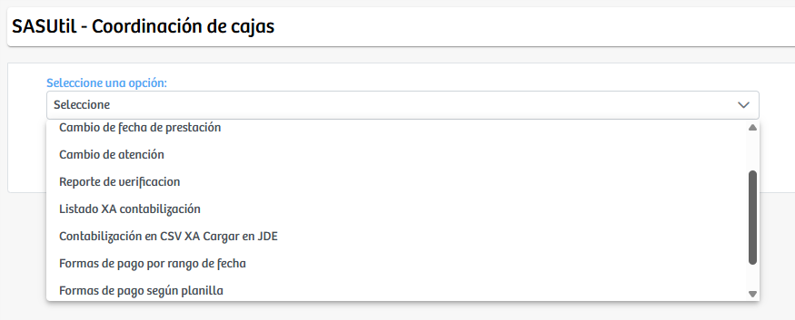
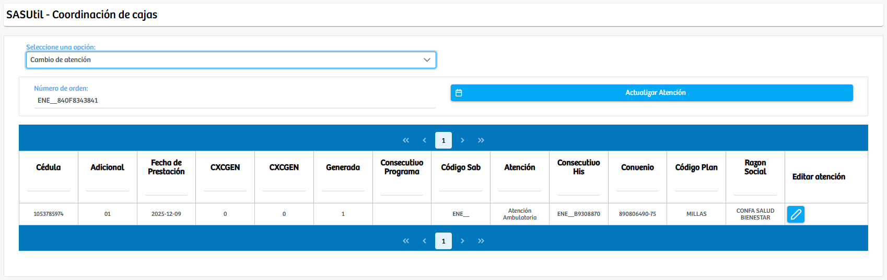
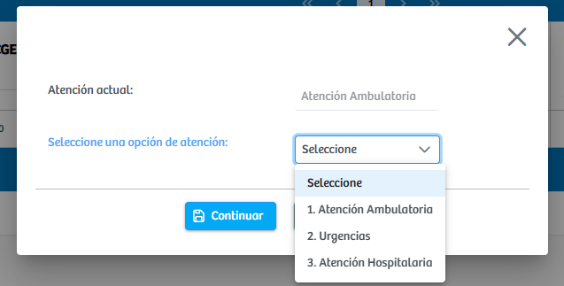
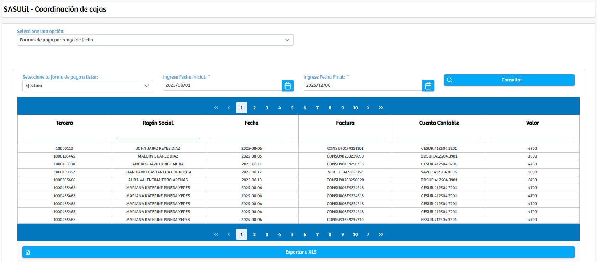

Modulos Sas-Web
Funcionalidades
Coordinacion cajas
El módulo Coordinación de Cajas centraliza un conjunto de herramientas operativas utilizadas para gestionar procesos administrativos relacionados con la facturación, la verificación de información, la actualización de datos de prestación y la administración de atenciones asociadas a órdenes del sistema. Al ingresar, el usuario encuentra un menú desplegable que actúa como punto de partida para seleccionar la funcionalidad que desea ejecutar. Dependiendo de la opción elegida, el sistema ajusta automáticamente la interfaz y muestra los campos, botones y acciones específicas requeridas para completar el proceso.
Entre las funcionalidades disponibles se encuentra Cambio de atención, herramienta que permite modificar el tipo de atención asignado a una orden previamente registrada. Una vez seleccionada esta opción, el sistema solicita el número de orden y, al realizar la búsqueda, presenta la información detallada de la atención actual junto con datos como documento del paciente, fecha de prestación, consecutivos de generación, convenio, plan y razón social.
Cuando el usuario presiona el botón de Edición, se despliega un modal en el que se muestra la atención vigente y un selector con las diferentes alternativas disponibles, tales como Atención Ambulatoria, Urgencias o Atención Hospitalaria. Tras elegir la nueva atención y confirmar la operación, el sistema actualiza los registros asociados, garantizando que la información refleje correctamente el servicio prestado.
Además de esta funcionalidad, el módulo ofrece procesos más orientados a consulta y auditoría interna, como la generación de reportes basados en rangos de fecha, verificación de datos o consolidación de información contable. Por ejemplo, al seleccionar la opción de Formas de pago por rango de fecha, el sistema habilita campos para ingresar los criterios de búsqueda, como forma de pago y fechas inicial y final, y posteriormente genera un listado detallado de facturas coincidentes. Dicho listado muestra información relevante para el proceso financiero, como tercero, razón social, número de factura, fecha y valor; y adicionalmente permite exportar los resultados a un archivo XLS para facilitar su análisis o incorporación en procesos contables externos.
La estructura dinámica del módulo, basada en la selección de opciones específicas, permite que cada funcionalidad se presente de forma independiente pero integrada dentro de un mismo entorno operativo. Esto optimiza el flujo de trabajo del personal administrativo y de facturación, al concentrar múltiples procesos en un único espacio accesible y organizado. En conjunto, Coordinación de Cajas funciona como una herramienta versátil y robusta que facilita la gestión de información crítica, la corrección de datos, el seguimiento de operaciones y el soporte a las tareas propias del área de recaudo y facturación, garantizando precisión y eficiencia en el manejo de los registros institucionales.